TRANSTORNOS DE ANSIEDAD
Trastorno de ansiedad generalizada:
Se caracteriza por una preocupación excesiva y persistente que es difícil de controlar y que suele centrarse en múltiples aspectos de la vida (trabajo, salud, relaciones). Los síntomas incluyen inquietud, fatiga, dificultad para concentrarse y problemas de sueño.
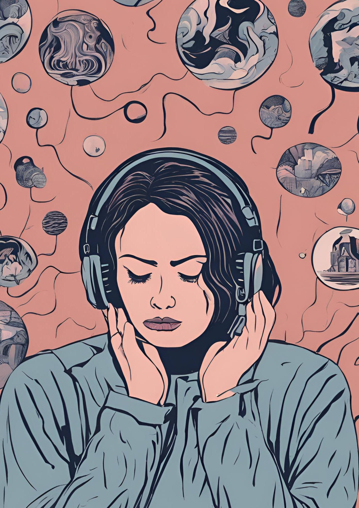
Trastorno de pánico:
Involucra ataques de pánico repentinos, con síntomas físicos intensos como palpitaciones, sudoración, temblores, dificultad para respirar y miedo a perder el control o a morir. Estos ataques suelen llevar a una preocupación constante por futuros episodios y a evitar situaciones que los puedan desencadenar.
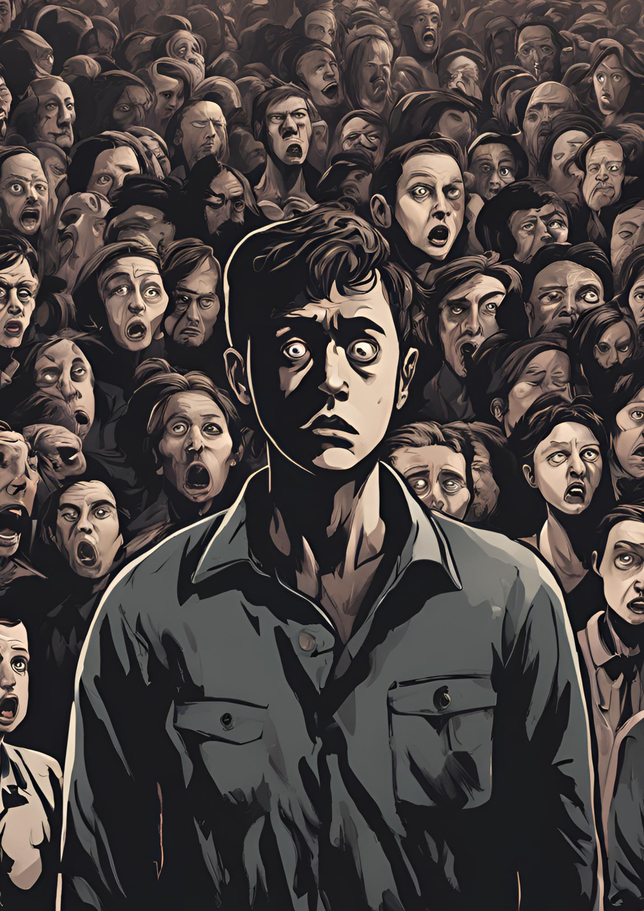
Fobias específicas:
Miedo intenso e irracional hacia un objeto o situación concreta, como alturas, animales o espacios cerrados. Las personas con fobias tienden a evitar sus desencadenantes, lo que puede limitar su vida cotidiana.
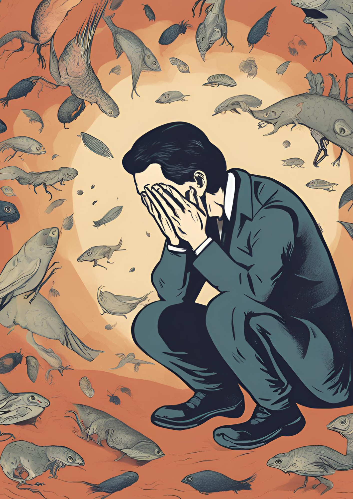
Trastorno de ansiedad social (fobia social):
Miedo extremo a situaciones sociales o a ser juzgado negativamente. Las personas pueden evitar interacciones sociales o situaciones que impliquen hablar en público, temiendo la humillación o vergüenza.
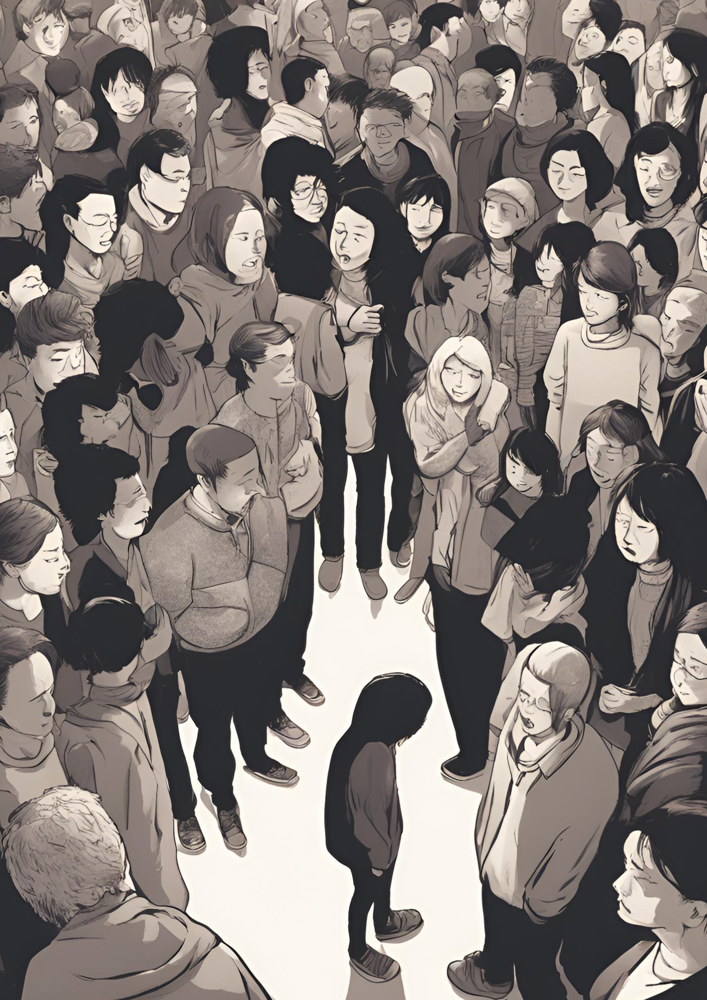
Mutismo selectivo:
Incapacidad para hablar en situaciones específicas, a pesar de que la persona puede comunicarse normalmente en otros contextos. Es común en niños y se observa en situaciones donde sienten ansiedad, como en la escuela.
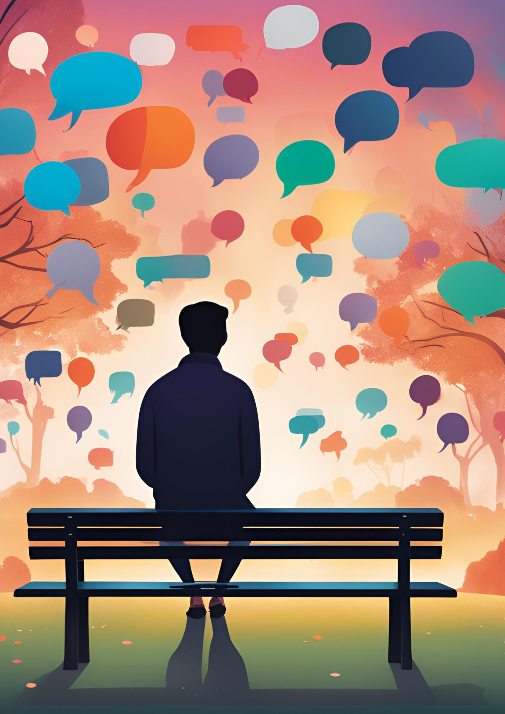
Trastorno de ansiedad por separación:
Ansiedad intensa al separarse de personas a quienes se tiene un fuerte apego, como padres o pareja. Es común en la niñez y puede incluir síntomas como pesadillas, angustia y quejas físicas al anticipar la separación.
TRANSTORNOS OBSESIVO-COMPULSIVOS Y RELACIONADOS
Trastorno obsesivo-compulsivo (TOC):
Las obsesiones son pensamientos, imágenes o impulsos recurrentes y no deseados que causan ansiedad. Las compulsiones son conductas repetitivas que la persona siente que debe realizar para reducir la ansiedad. Por ejemplo, lavarse las manos repetidamente para evitar contaminación.
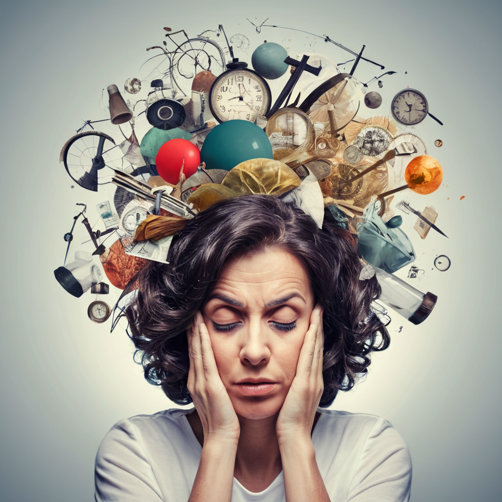
Trastorno dismórfico corporal:
Preocupación excesiva por defectos en la apariencia, que pueden ser leves o inexistentes. Esto puede llevar a comportamientos repetitivos como mirarse al espejo, arreglarse en exceso, o evitar salir en público.
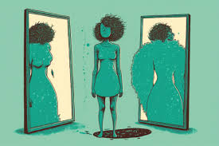
Tricotilomanía (arrancarse el pelo):
Impulso irresistible de arrancarse el cabello de diversas partes del cuerpo, lo cual puede llevar a pérdida visible del cabello y dificultades para detener el comportamiento, causando angustia y afectación de la vida diaria.
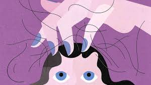
Dermatilomanía (excoriación):
Comportamiento repetitivo e impulsivo de rascarse o pellizcarse la piel, frecuentemente como respuesta al estrés o ansiedad, lo cual puede producir lesiones y cicatrices.
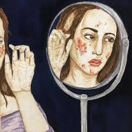
TRANSTORNOS DEL ESTADO DE ANIMO
Trastorno depresivo mayor:
Estado de ánimo persistentemente bajo, con pérdida de interés y placer en las actividades. A menudo se acompaña de fatiga, cambios en el apetito, insomnio o hipersomnia, sentimientos de culpa o inutilidad, y pensamientos de muerte o suicidio.
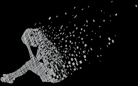
Trastorno distímico (distimia):
Forma crónica de depresión leve, donde la persona experimenta un estado de ánimo deprimido durante la mayor parte del tiempo por al menos dos años. Aunque los síntomas no son tan graves como en la depresión mayor, afectan la calidad de vida y la capacidad de disfrutarla.

Trastorno bipolar I y II:
El Trastorno Bipolar I se caracteriza por episodios de manía (estado de ánimo extremadamente elevado, energía excesiva, y comportamientos arriesgados) y episodios depresivos. En el Bipolar II, la persona experimenta hipomanía (similar a la manía pero menos grave) y episodios depresivos.
Trastorno ciclotímico:
Alteraciones constantes en el estado de ánimo que incluyen síntomas hipomaníacos y depresivos leves, pero que no cumplen los criterios completos de manía o depresión. Estos cambios son menos intensos pero pueden ser persistentes y afectar la funcionalidad diaria.
Trastorno disfórico premenstrual:
Síntomas severos de depresión, irritabilidad y ansiedad que ocurren antes de la menstruación y mejoran poco después de que esta comienza. Estos síntomas son más intensos que el síndrome premenstrual común y pueden afectar el desempeño diario.
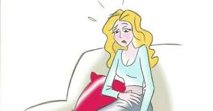
TRANSTORNOS PSICOTICOS
Esquizofrenia:
Enfermedad crónica que afecta la percepción, el pensamiento, el comportamiento y las emociones. Los síntomas incluyen alucinaciones (ver o escuchar cosas que no existen), delirios (creencias falsas), pensamiento desorganizado y, en algunos casos, disminución de la motivación y afecto plano.
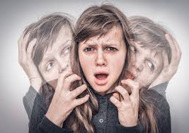
Trastorno esquizoafectivo:
Combina síntomas de la esquizofrenia, como alucinaciones o delirios, con episodios de trastornos del estado de ánimo, como depresión o manía. Los síntomas psicóticos y del estado de ánimo pueden ocurrir al mismo tiempo o alternarse.
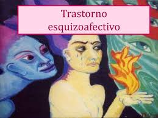
Trastorno esquizofreniforme:
Similar a la esquizofrenia, pero los síntomas duran entre uno y seis meses. Incluye alucinaciones, delirios y deterioro en el pensamiento, pero puede ser una condición temporal.
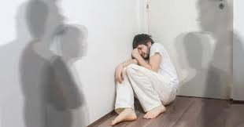
Trastorno delirante:
Creencias falsas y firmemente arraigadas que no se basan en la realidad (por ejemplo, creer que alguien conspira en su contra). A diferencia de la esquizofrenia, no suele haber alucinaciones o deterioro general del pensamiento.
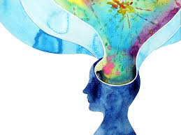
Trastorno psicótico breve:
Aparición repentina de síntomas psicóticos (alucinaciones, delirios o habla desorganizada) que dura menos de un mes y, generalmente, sigue a un evento estresante. La persona vuelve a su funcionamiento normal después del episodio.
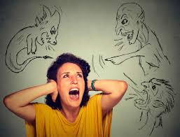
OTROS TRANSTORNOS
Trastorno de la personalidad límite (borderline):
Patrón de inestabilidad en las relaciones interpersonales, autoimagen y emociones. Se caracteriza por miedo al abandono, impulsividad, y cambios extremos de humor.
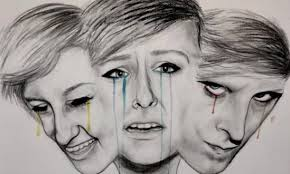
Trastorno de personalidad antisocial:
Desprecio persistente por los derechos de los demás y normas sociales. Incluye engaño, impulsividad y falta de remordimiento, y puede llevar a comportamientos delictivos o irresponsables.
Trastorno de la personalidad narcisista:
Sentido de grandiosidad, necesidad de admiración y falta de empatía hacia los demás. Las personas con este trastorno suelen sentirse superiores y buscar constantemente reconocimiento.
Trastorno de estrés postraumático (TEPT):
Resultado de experiencias traumáticas. Los síntomas incluyen recuerdos involuntarios del evento, hipervigilancia, evitación de estímulos relacionados con el trauma y síntomas de hiperactivación emocional.
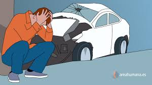
Trastorno disociativo de identidad (anteriormente, trastorno de personalidad múltiple):
Presencia de dos o más identidades o estados de personalidad en una misma persona, a menudo debido a traumas intensos. Las identidades pueden tener diferentes nombres, características y recuerdos.
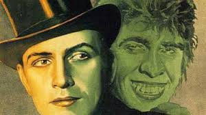